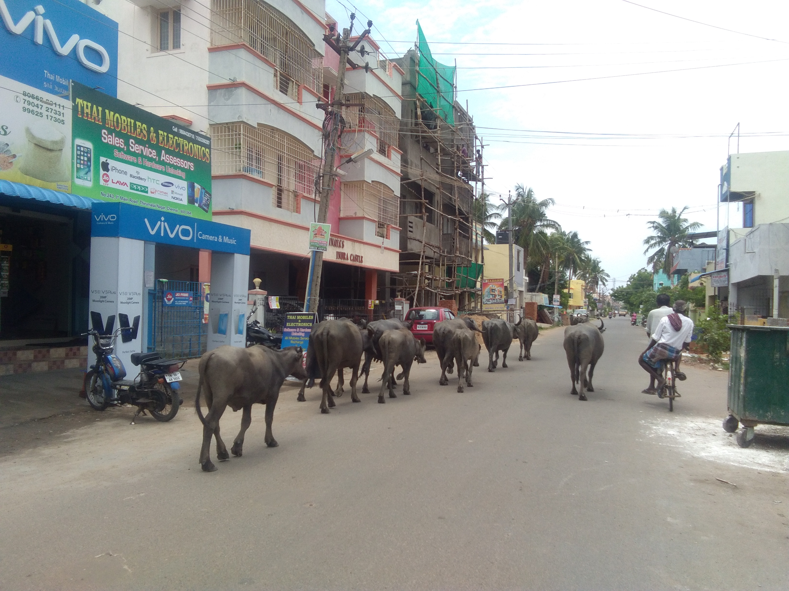

19기
19기

김민성
1학기에는 자바1, 자바2, 수학, 영어, 타밀 수업을 들었습니다. 수업의 질은 전반적으로 매우 만족합니다.
교수님들도 열의를 가지고 수업을 진행해 주셨습니다. 하지만 수업 시간표가 미리 짜여 있지않고, 일주일 전이나 매일 전날 저녁이 되어서야 시간표를 받아볼 수 있었습니다. 그래서 답답함을 많이 느꼈습니다. 코디로서 매일 수업 시간표를 여쭤봐야 하고, 공지해 주어야하는 번거로움도 있었습니다. 또한, 수업이 당일 날 취소되는 경우가 많았습니다. 수업이 없는 날을 미리 알려준다면 다른 계획을 세울 수 있었을 텐데 그러지 못하고 시간을 낭비하게 되어 너무 아쉬웠습니다.
또한, 1학기 초반에 주거 문제와 FRRO문제 등으로 신경 써야하는 부분이 너무 많아서 수업에 온전히 집중을 할 수 없었던 점도 있었습니다. 주거 문제만 없었다면 좀 더 수업에 집중을 하고, 공부를 할 수 있었을 텐데 너무 아쉽습니다.
2학기는 매일 오전 9시부터 오후 4시 30분까지 수업이 있습니다. 매일 매일 이렇게 수업이 진행되어 각자의 개인 시간이 별로 없습니다. 1학기 때 시간표를 잘 분배했다면 이런 일이 일어나지 않았을텐데 아쉬움이 남습니다. 또한, 아직 정해지지 않은 부분들이 많습니다. 1학기를 마치고 2학기를 시작한지 벌써 한달이라는 시간이 지났는데, 아직도 정해지지 않은 부분들이 있어서 그런 부분들에 신경써야 한다는 점이 정말 답답합니다.